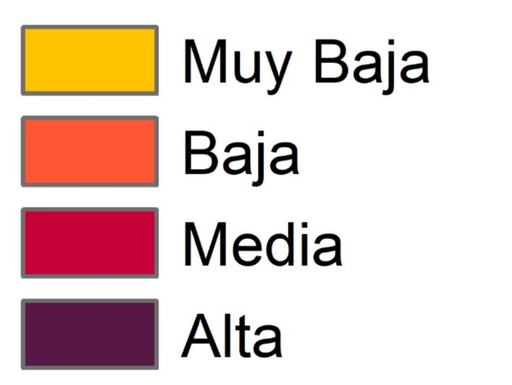

<!DOCTYPE html>
<html>
<head> 
	<meta charset=utf-8>
	<title>Riesgo de incendio por causalidad Humana en la Comunidad de Madrid</title>
	<link rel="stylesheet" href="https://unpkg.com/leaflet@1.0.1/dist/leaflet.css" />
	<style> 
		body {
			padding: 0;
			margin: 0;
		}
		html, body, #map {
			height: 100%;
			width: 100%;
			padding: 0;
			margin: 0;
		}
		.info {
			padding: 6px 8px;
			font: 14px/16px 'Geologica', sans-serif; /* Cambiada la fuente a Geologica */
			background: white;
			background: rgba(255,255,255,0.8);
			box-shadow: 0 0 15px rgba(0,0,0,0.2);
			border-radius: 5px;
		}
		.info h2 {
			margin: 0 0 5px;
			color: #000f39;
			font-family: 'Geologica', sans-serif; /* Cambiada la fuente a Geologica */
		}
		.legend {
			line-height: 18px;
			color: #555555;
		}
		.legend I {
			width: 18px;
			height: 18px;
			float: left;
			margin-right: 8px;
			opacity: 0.7;
		}
	</style> 	
</head>  
	<body>
		<div id ="map">
	 		<script src="https://unpkg.com/leaflet@1.0.1/dist/leaflet.js"></script>
			<script type="text/javascript" src="A3.js.geojson"></script>
			<script type="text/javascript" src="C5.js.geojson"></script>
			<script>
				var osm = L.tileLayer('http://{s}.tile.osm.org/{z}/{x}/{y}.png', {
					attribution: '&copy; <a href="http://osm.org/copyright">OpenStreetMap</a> contributors'});
				var map = L.map('map', {
					center: [40.417183, -3.703517],
					zoom: 9,
					zoomControl: false,
					layers: osm,
					maxZoom: 18,
					minZoom: 7,
				});
			</script>
			<script>
        		// Función para crear el control personalizado
       			var DownloadControl = L.Control.extend({
            		onAdd: function(map) {
                	// Crear el botón de descarga
						var button = L.DomUtil.create('button');
							button.innerHTML = 'Descargar TFM';
							
							// Función para descargar el PDF
							button.onclick = function() {
								// Crear un enlace de descarga
								var link = document.createElement('a');
								link.href = 'docs/MODELO_DE_RIESGO_DE_INCENDIOS_FORESTALES_POR_CAUSALIDAD_HUMANA_EN_LA_COMUNIDAD_DE_MADRID.pdf'; // Ruta al archivo PDF
								link.download = 'MODELO_DE_RIESGO_DE_INCENDIOS_FORESTALES_POR_CAUSALIDAD_HUMANA_EN_LA_COMUNIDAD_DE_MADRID.pdf.pdf'; // Nombre del archivo que se descargará
								document.body.appendChild(link);
								link.click();
								document.body.removeChild(link);
								};
								return button;
							},
						});

				// Definimos las capas y las añadimos al mapa
				var osm = L.tileLayer('https://{s}.tile.osm.org/{z}/{x}/{y}.png', {
					attribution: '&copy; <a href="http://osm.org/copyright">OpenStreetMap</a> contributors',dragging: false,
					}).addTo(map);

				var esri_worldimagery = L.tileLayer('https://server.arcgisonline.com/ArcGIS/rest/services/World_Imagery/MapServer/tile/{z}/{y}/{x}', {
					attribution: 'Tiles &copy; Esri &mdash; Source: Esri, i-cubed, USDA, USGS, AEX, GeoEye, Getmapping, Aerogrid, IGN, IGP, UPR-EGP, and the GIS User Community'
					});
				var pnoa = L.tileLayer.wms("https://www.ign.es/wms-inspire/pnoa-ma?SERVICE=WMS&", {layers: "OI.OrthoimageCoverage",
					format: 'image/jpeg',
					transparent: false,
					version: '1.3.0',
					attribution: "PNOA WMS. Cedido por © Instituto Geográfico Nacional de España"
					});
				var C5 = L.geoJson(C5, {style: style, onEachFeature: popup}).addTo(map);
				var A3 = L.geoJson(A3, {style: style, onEachFeature: popup}).addTo(map);

				// Construimos el control de capas (base y superpuestas) y añadimos las que queremos que se puedan mostrar
				var baselayers = {
					"Open Street Maps": osm,
					"ESRI World Imagery": esri_worldimagery,
					"PNOA": pnoa,		
				};
				var overlayers = {
					"Primer modelo de riesgo": A3,
					"Segundo modelo de riesgo": C5,	
				};
				L.control.layers(baselayers, overlayers,{
					position: 'topright',
					collapsed:false
				}).addTo(map);

				// Deseleccionamos el modelo C5 de las capas mostradas
				map.removeLayer(C5);

				// Definimos los colores de los grids
				function getColor(gridcode) {
					return gridcode == 4 ? '#571845' :
						gridcode == 3 ? '#c70039' :
						gridcode == 2 ? '#ff5733' :
						gridcode == 1 ? '#ffc300' :
							'#58FA58';
						}

				// Aplicamos los colores
				function style(feature) {
					return {
					fillColor: getColor(feature.properties.gridcode),
					weight: 0.5,
					opacity: 10,
					color: 'white',
					fillOpacity: 0.85,
					};
				}

				// Añadimos un pop-up con la info del riesgo en cada grid
				function popup(feature, layer) {
					if (feature.properties && feature.properties.gridcode) {
					layer.bindPopup("<h3>Riesgo de ocurrencia: "+feature.properties.OCU+"</h3>");
					}
				}

				//Añadimos un titulo a nuestra web
				var title = L.control({position: "topleft"});
					title.onAdd = function (map) {
						var div = L.DomUtil.create('div', 'info');
							div.innerHTML +='<h2>Riesgo de incendio por causalidad humana</h2>Modelos realizados mediante GWLR';
						return div;
						};
					title.addTo(map);

				// Agregamos debajo del titulo el boton de descarga pdf
				new DownloadControl({ position: 'topleft' }).addTo(map);
		
				// Añadimos una leyenda como imagen
				var leyenda = L.control({position: "bottomright"});
					leyenda.onAdd = function(map) {
						var div = L.DomUtil.create("div", "info legend");
						div.innerHTML = '';
						return div;}
					leyenda.addTo(map);
					L.control.scale({options: {
						position: 'bottomleft',
						maxWidth: 100,
						metric: true,
						imperial: false,
						updateWhenIdle: false
					}}).addTo(map);
			</script>
		</body>
	</div>
</html> 